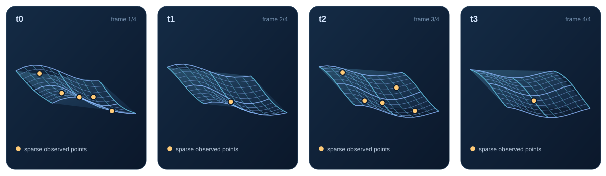
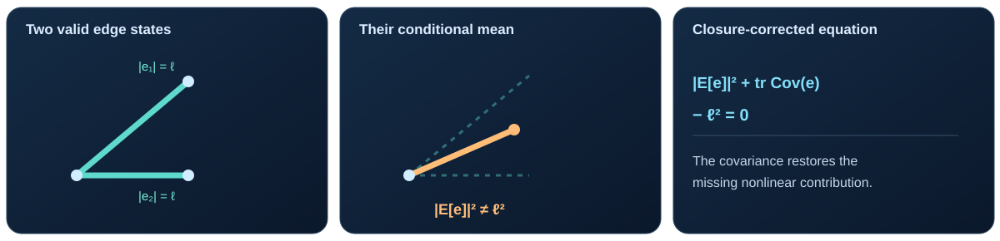
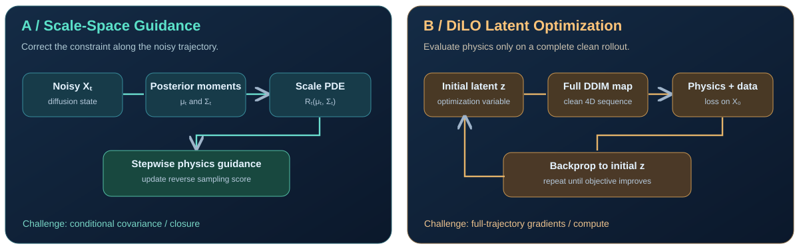

Where should physics enter diffusion?
A concrete case study in 4D cloth reconstruction from sparse, noisy observations. Two routes: correct constraints at every noise level, or optimize a clean generated trajectory.
01. Task: reconstruct a deforming cloth in 4D
3D geometry + timeGiven sparse tracked 3D points across frames, recover an entire deforming surface sequence. Schematic frames, not simulation results.

02. One concrete physical constraint
Nearly inextensible clothA local stretching constraint—not a full cloth dynamics PDE. Its quadratic form makes the scale-space discrepancy explicit.
03. Why ordinary guidance can be wrong
Jensen gap
04. Two ways to inject physics
Different intervention points
Fix the noisy-time constraint
Use conditional moments to correct a nonlinear constraint while sampling. Needs a reliable covariance estimate. Exact identity for this quadratic edge example under a correct posterior.
Move optimization to the clean output
Optimize initial diffusion latent z through a deterministic trajectory; evaluate observation and edge losses only on the fully generated X₀. No noisy-state PDE evaluation, but costly full-rollout gradients.
Not equivalent: Route A seeks a noise-consistent guidance rule; Route B performs inference-time constrained reconstruction. Neither alone guarantees exact cloth dynamics or perfect sample diversity.
05. Smallest useful experiment
One prior · same observationsQuestion for discussion: Can a cheap closure-corrected sampler initialize DiLO for faster, more reliable 4D reconstruction?